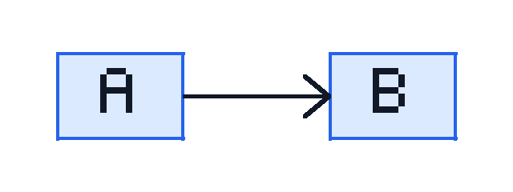

Codex conversion fixture
Sanitized English paragraph. Обезличенный русский абзац.
Details
Follow the child anchor and keep the external reference.
Overview tab
Overview content is meaningful.
Risks tab
Risk content is meaningful.
Information panel content.
Generic panel content.
| Area | Checks | |
|---|---|---|
| Primary | Secondary | |
| Export | HTML | Links |
| Resources preserved | ||
Images and diagrams

Draw.io sourceAttachments
- Text PDF
- Scanned PDF
- DOCX requirements
- PPTX briefing
- XLSX metrics
- Plain text notes
- Markdown guide
- CSV data
- JSON data
- YAML configuration
- EML message
- HTML fragment
- SVG diagram